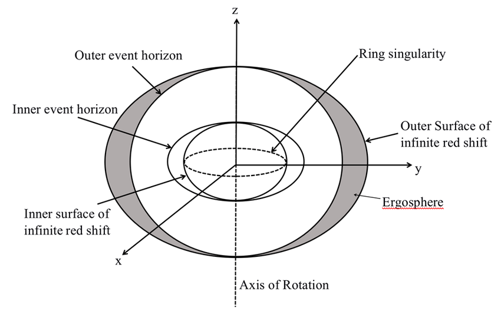

From Classical Mechanics to Relativity
For many years after Newton's theories, they remained useful and explained many natural phenomena. It was, for all intents and purposes, good enough. Many astronomers even during Newtons time and after found issues with the theory though, it didn't explain some orbits of celestial bodies or far off system as well as some related phenomena. There were clear issues, and slow advances were made. That is, until Einstein formulated relativity a bit over two centuries later. Onto relativity, Einstein published his paper "On Electrodynamics of Moving Bodies" which postulated that the laws of physics were the same over all references assuming no energy is being enforced upon that reference (energy in this case would be a velocity change), and also that light-speed is the same at all times in a vacuum. It should be stated that Galileo had a similar theory, but as many astronomer's and philosopher's of his time Galileo had a less complete picture. Continuing on, Einstein then published an article in 1908 explaining special relativity applied to gravity as well. In the time between then and his publishing of the General Theory of Relativity in 1915 he refined is model more and more.
The Importance of Relativity
Beyond the importance of relativity to science, it is important to black holes in that it explains some extremely
important phenomena related to finding them, studying them, and possibly even utilizing them in the future. There have
been holes however, no pun intended, in General Relativity. Such hole have been highlighted over the years, like those
proposed in Einstein's Field Equations, and oher scientists. The direct importance of Relativity to black holes may be
seen directly in that of the Kerr metric and the Kerr-Newman metric, which deal with uncharged and charged black holes
respectively. Together they state that a black hole that is spinning will drag space and time with it, and that spinning
black holes must have a ringularity. A ringularity is simply a singularity that is spinning since a point cannot spin,
and to be clear it is effectively impossible for a black hole to not have any angular momentum.
Below is shown a Kerr metric Ringularity. This may not be correct if any variables are known, and is rather
intended to be a simple illustration of what is being talked about.
